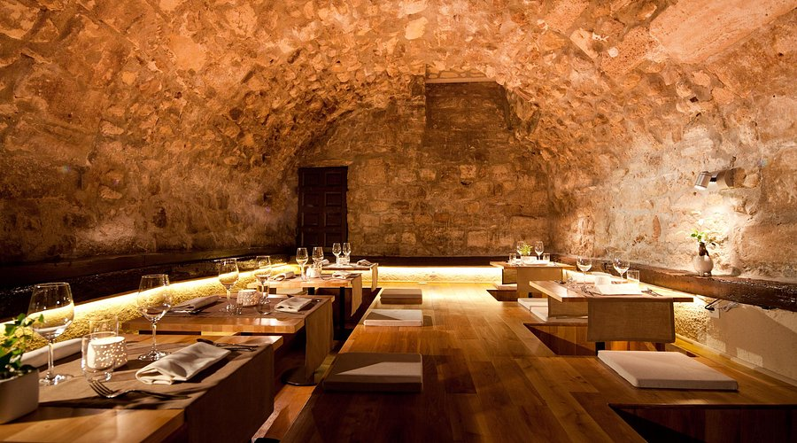

La Truffière
Atmosphere: Atmospheric eatery with wood beams & stone vaults, serving refined & artfully plated French cuisine.
Location: 4 Rue Blainville, 75005 Paris, France
Facilities: Dine-in, Restroom,Accepts reservations, Credit cards, Debit cards, NFC mobile payments, Credit cards

Sola
Atmosphere: Refined, creative Japanese food with French influences, served in a stone cellar & elegant room.
Location: 12 Rue de l'Hôtel Colbert, 75005 Paris, France
Facilities: Takeout, Dine-in, Reservations required, Accepts reservations.

Pur' - Jean-François Rouquette
Atmosphere: Upscale restaurant in the Park Hyatt Hotel preparing imaginative local dishes from a tasting menu.
Location: 5 Rue de la Paix, 75002 Paris, France
Facilities: Dine in, Bar onsite, Restroom, Wi-Fi, Free Wi-Fi